AI10 — MODULE 16
Machine Learning Operations Engineer Associate (AI-300)
Day 1: Design a Machine Learning Training Solution
Instructor: | Kiran Dambal |
Student: | ____________________________________________ |
Date: | 5 September 2026 |
Duration: | Full Day (Morning + Afternoon Sessions) |
Enterprise Analytics & Production MLOps Curriculum
Official Course Handout — Azure Machine Learning SDK v2
Table of Contents
01 | Session Overview | p. 3 |
02 | Learning Objectives | p. 3 |
03 | End-to-End ML Pipeline Overview | p. 4 |
04 | Topic 1: Course Structure & Day 1 Roadmap | p. 5 |
05 | Topic 2: Defining the ML Problem Type | p. 6 |
06 | Topic 3: Designing a Data Ingestion Solution | p. 7 |
07 | Topic 4: Choosing a Service to Train a Model | p. 8 |
08 | Topic 5: Deciding Between Compute Options | p. 9 |
09 | Topic 6: Training a Model — The 7-Step Pipeline | p. 10 |
10 | Topic 7: Model Integration & Deployment | p. 11 |
11 | Topic 8: Model Monitoring & MLOps Readiness | p. 12 |
12 | Topic 9: Automated Machine Learning (AutoML) | p. 13 |
13 | Topic 10: Lab — Classification with AutoML (Python SDK v2) | p. 14 |
14 | AutoML Lab — Python Code Reference | p. 15 |
15 | Azure ML — Typical Usage Sequence | p. 16 |
16 | Case Study: Proseware Diabetes Detection | p. 17 |
17 | Knowledge Check | p. 18 |
18 | Glossary of Key Terms | p. 19 |
19 | Key Takeaways from This Session | p. 21 |
20 | Suggested References & Closing Summary | p. 22 |
Session Overview
• This handout covers Day 1 of the AI-300 Machine Learning Operations Engineer Associate certification module, focused on designing a machine learning training solution on Azure.
• The session introduced the end-to-end ML lifecycle — from defining the problem type and ingesting data, to choosing services, training models, deploying endpoints, and monitoring in production.
• A central case study (Proseware Diabetes Detection) was used throughout the session to ground every design decision in a real-world clinical scenario.
• Four key Azure services were compared for ML training: Azure AI Services, Microsoft Fabric, Azure Databricks, and Azure Machine Learning.
• Automated Machine Learning (AutoML) was explored as a method to rapidly find the best classification model without manually coding every algorithm.
• Three hands-on labs were assigned: finding the best classification model with Azure ML, optimizing model training, and performing hyperparameter tuning with a sweep job.
• Key frameworks introduced: the 7-step model training pipeline, the data ingestion pattern (Extract → Transform → Store → Train), and the MLOps monitoring loop.
Learning Objectives
After this session, you will be able to:
1. Identify the correct ML problem type (classification, regression, time-series forecasting, computer vision, or NLP) for a given business scenario and justify your selection with specific data characteristics.
2. Design a complete data ingestion pipeline for ML training by selecting appropriate Azure storage solutions (Blob Storage, Data Lake, SQL Database) and data movement tools (Azure Synapse Analytics, Databricks).
3. Choose the optimal Azure service for model training (Azure AI Services, Microsoft Fabric, Azure Databricks, or Azure Machine Learning) based on team skills, tooling preferences, and audit requirements.
4. Select appropriate compute resources — deciding between CPU vs GPU, general-purpose vs memory-optimized VMs, and Spark clusters — based on data type, dataset size, and budget.
5. Execute the 7-step model training pipeline: load data, preprocess, split, choose algorithm, train, score, and evaluate — using the Azure ML Python SDK v2.
6. Configure and run an Automated ML (AutoML) classification job using the Python SDK, specifying task type, primary metric, cross-validation folds, blocked algorithms, and timeout limits.
7. Design a model deployment solution by choosing between real-time and batch endpoints based on prediction frequency, latency requirements, and data volume.
8. Architect a model monitoring strategy that detects data drift, concept drift, and performance degradation — with automated retraining triggers.
9. Apply MLOps principles to prepare models for production, including experiment tracking, model registration, and pipeline orchestration within Azure Machine Learning Studio.
10. Interpret AutoML results to identify the best-performing model and understand how featurization, algorithm selection, and hyperparameter tuning contribute to model accuracy.
End-to-End ML Pipeline Overview
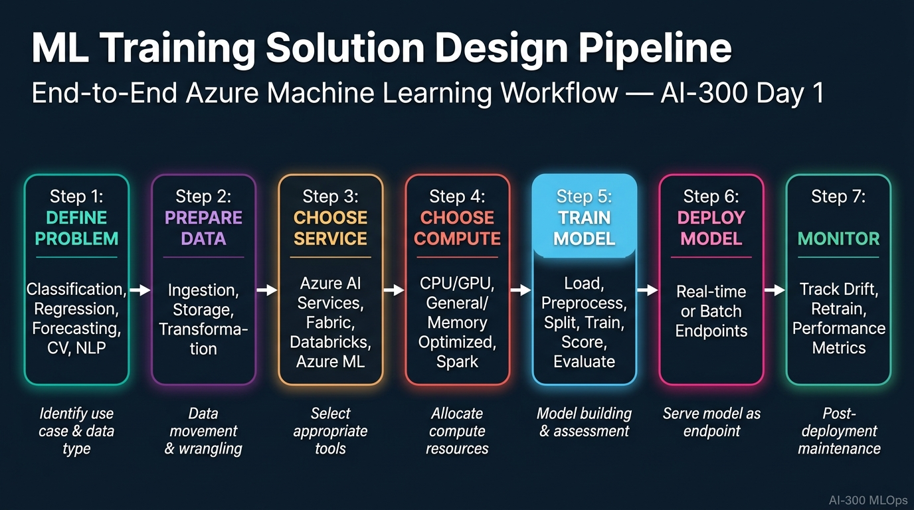
Figure 1. The complete 7-step workflow from defining the ML problem type through data preparation, service selection, compute allocation, model training, deployment, and production monitoring. [Enterprise Analytics Handout Series]
TOPIC 1: Course Structure & Day 1 Roadmap
The AI-300 certification module is structured around the practical design decisions that an ML Operations Engineer must make when building enterprise ML systems on Azure. Day 1 focuses on the design phase — understanding the problem, preparing data, selecting services, and training models.
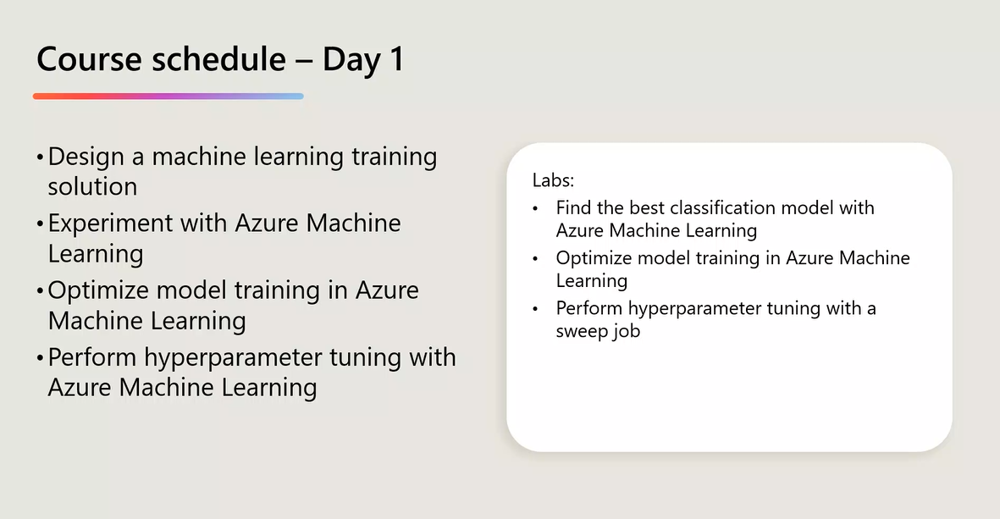
Figure 2. Day 1 schedule showing four lecture topics and three hands-on labs.
2. Course Schedule — Day 1](C:\Users\Utsav\.gemini\antigravity-ide\brain\73958bc8-3992-4b7d-9484-4cd83be14b1d\screenshot_course_schedule.png) Figure 2. Day 1 schedule showing four lecture topics and three hands-on labs.
1. The AI-300 module (Machine Learning Operations Engineer Associate) is part of the broader AI10 programme and is designed to certify practitioners who can design, deploy, and manage ML solutions at enterprise scale on Azure.
2. Day 1 is divided into four interconnected lecture blocks: designing an ML training solution, experimenting with Azure ML, optimising model training, and performing hyperparameter tuning with sweep jobs.
3. Three hands-on labs accompany the lecture content: (a) finding the best classification model with Azure ML, (b) optimising model training, and (c) performing hyperparameter tuning with a sweep job.
4. The session follows a "Proseware" case study — a fictional healthcare company developing a mobile app to help doctors diagnose diabetes — anchoring every concept in a concrete scenario.
5. The curriculum is structured sequentially: each topic builds on the previous one, from problem definition to deployment and monitoring, mirroring the real-world MLOps workflow.
6. Azure Machine Learning Studio (ml.azure.com) serves as the primary platform, providing a unified interface for notebooks, automated ML, designer, prompt flow, compute management, and deployment.
7. The Python SDK v2 (azure-ai-ml package) is the primary programmatic interface, providing full control over experiment configuration, job submission, and model management.
8. The module emphasises that ML is fundamentally about designing systems that are reproducible, auditable, scalable, and maintainable — not just building models.
9. Each design decision (problem type, storage, service, compute, deployment) has downstream consequences for cost, performance, compliance, and team productivity.
10. The AI-300 certification exam tests the ability to make informed trade-offs between Azure services — knowing when and why to choose one over another.
11. The Proseware case study features data attributes: Pregnancies, PlasmaGlucose, DiastolicBloodPressure, TricepsThickness, SerumInsulin, BMI, DiabetesPedigree, and Age — feeding into a binary classification model.
12. Students complete labs within Azure ML Studio compute instances, preconfigured with Python 3.8, JupyterLab, VS Code, and the azure-ai-ml SDK.
13. The content maps directly to the "Design a machine learning training solution" learning path in the official Microsoft AI-300 certification syllabus.
14. Collaborative learning is emphasised: students discuss design trade-offs with peers and justify decisions using case study criteria.
15. An MLOps engineer's core responsibility is bridging data science experimentation (notebook-driven, ad-hoc) and production engineering (automated, versioned, monitored).
16. All lab notebooks are executed on compute instances within the Azure ML workspace — no local development environments needed.
17. The module connects to the broader Azure ecosystem: Synapse Analytics for data prep, Blob Storage and Data Lake for persistence, AKS for model serving at scale.
18. Day 1 intentionally front-loads design decisions before code, reinforcing that poorly designed ML systems cannot be fixed by better algorithms alone.
19. The schedule allocates time for knowledge checks and extended case study exercises to ensure active learning and application.
20. By the end of Day 1, students should be able to sketch a complete architecture diagram for any ML training solution on Azure and defend every choice.
📌 TEACHER'S NOTE "This module is not about memorising Azure service names — it's about knowing which one to pick when the requirements change. That's what makes you an engineer, not just a user." — Kiran Dambal |
KEY TERMS
AI-300 — Microsoft certification for ML Operations Engineer Associate. |
MLOps — Practices combining ML, DevOps, and Data Engineering for production ML systems. |
Azure ML Studio — Cloud portal (ml.azure.com) for building, training, deploying, and managing ML models. |
Python SDK v2 — Second-generation Python package for Azure ML interaction. |
TOPIC 2: Defining the ML Problem Type
Before any data is collected or model trained, the most critical design decision is identifying the correct type of ML problem. Azure categorises problems into five task types — each requiring different algorithms, data formats, and performance metrics.
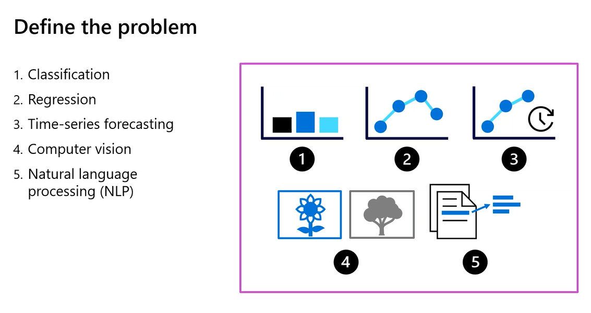
Figure 3. The five fundamental ML problem types with visual icons.
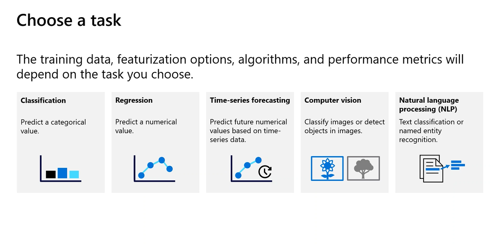
Figure 3b. Detailed view of AutoML task types: Classification, Regression, Time-series forecasting, Computer vision, and NLP.
3. Define the Problem — ML Task Types](C:\Users\Utsav\.gemini\antigravity-ide\brain\73958bc8-3992-4b7d-9484-4cd83be14b1d\screenshot_define_problem.png) Figure 3. The five fundamental ML problem types with visual icons.  Figure 3b. Detailed view of AutoML task types: Classification, Regression, Time-series forecasting, Computer vision, and NLP.
1. The first step in any ML solution design is to define the problem type — Azure categorises ML tasks into five types: Classification, Regression, Time-series forecasting, Computer Vision, and NLP.
2. Classification predicts a categorical value — assigning an input to one of a finite set of discrete classes — e.g., predicting whether a patient is diabetic (Yes/No).
3. Regression predicts a continuous numerical value — e.g., estimating the exact blood glucose level of a patient.
4. Time-series forecasting extends regression by predicting future values based on historical temporal data — e.g., forecasting hospital admission rates.
5. Computer vision encompasses tasks where input is image data — including image classification, object detection, and image segmentation.
6. NLP covers tasks where input is text — including text classification, named entity recognition, and sentiment analysis.
7. The choice of problem type determines which algorithms AutoML will try, which preprocessing steps apply, and which metrics are meaningful — classification uses accuracy, AUC, F1; regression uses RMSE, R².
8. In Proseware's case, the problem is binary classification: given clinical features (Pregnancies, PlasmaGlucose, etc.), predict whether the patient should be flagged for diabetes screening.
9. A common mistake is confusing classification with regression — discrete finite values = classification; continuous infinite values = regression.
10. Defining the problem type requires understanding business context, end user needs, and how the prediction will be consumed.
11. A classification output ("Yes, with 89% certainty") is more actionable for a doctor than a regression output ("predicted glucose = 127.3 mg/dL").
12. For temporal predictions, always choose time-series forecasting over standard regression — time-series models account for seasonality, trends, and autocorrelation.
13. Computer vision problems require GPUs and different data formats (images, bounding boxes) compared to tabular problems.
14. NLP problems require tokenisation, embedding generation, and often transfer learning from pretrained models — handled automatically by AutoML.
15. The training data, featurisation options, algorithms, and performance metrics all depend on the task type chosen.
16. For classification, AutoML explores: LogisticRegression, DecisionTree, RandomForest, GradientBoosting, LightGBM, XGBoost, LinearSVM.
17. Multi-class classification uses macro-averaged F1 and top-k accuracy instead of simple accuracy.
18. Class imbalance must be considered — if 95% are non-diabetic, accuracy is misleading; a model predicting all "non-diabetic" gets 95% accuracy but is clinically useless.
19. Problem framing can be ambiguous — customer lifetime value could be regression (exact amount) or classification (high/medium/low tier).
20. Always start with: "What does the end user need to see?" — doctor needs Yes/No (classification), supply chain needs quantity (time-series), moderator needs flag (NLP classification).
📌 TEACHER'S NOTE "The problem definition is everything. If you frame the problem wrong, the best algorithm in the world will give you the wrong answer." — Kiran Dambal |
KEY TERMS
Classification — ML task predicting a categorical label from discrete classes. |
Regression — ML task predicting a continuous numerical value. |
Time-Series Forecasting — ML task predicting future values from temporal data. |
Featurisation — Automatic preprocessing of features by AutoML. |
TOPIC 3: Designing a Data Ingestion Solution
Data is the fuel of ML, and how you move, transform, and store it determines quality, reproducibility, and scalability. This topic covers the Azure data ingestion architectural pattern.
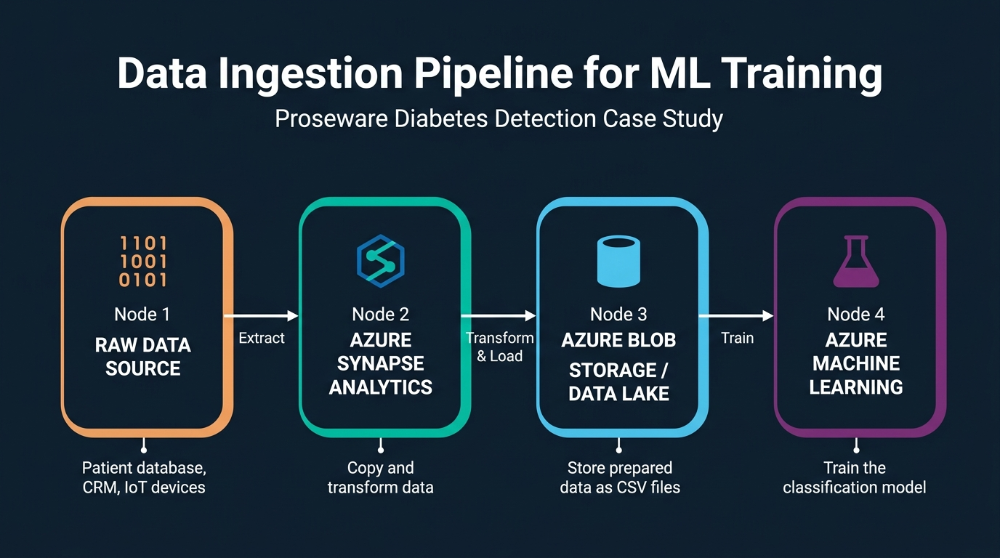
Figure 4. End-to-end flow from raw data through Azure Synapse Analytics to Azure Data Lake and Azure ML.
4. Data Ingestion Pipeline for ML Training](C:\Users\Utsav\.gemini\antigravity-ide\brain\73958bc8-3992-4b7d-9484-4cd83be14b1d\data_ingestion_pipeline_1788889150268.jpg) Figure 4. End-to-end flow from raw data through Azure Synapse Analytics to Azure Data Lake and Azure ML.
1. A fundamental benefit of cloud ML is separating compute from storage — scale compute on demand while data persists cheaply; shut down compute when idle.
2. Three common storage options for ML training: Azure Blob Storage (general-purpose), Azure Data Lake Gen 2 (hierarchical, big data optimised), Azure SQL Database (relational).
3. A common ingestion pipeline: (1) extract from source, (2) transform with Azure Synapse, (3) store in Blob/Data Lake, (4) train with Azure ML.
4. The pipeline can use Azure Synapse Analytics, Azure Databricks, or Azure ML for data transformation.
5. Proseware requirements: structured patient data, Python team wants CSV files, design must be scalable and privacy-compliant.
6. Recommended storage: Azure Data Lake Gen 2 — hierarchical namespace, CSV/Parquet support, Azure ML integration, enterprise security.
7. Recommended data movement: Azure Synapse Analytics — Copy Data activities, Mapping Data Flows, direct Data Lake connectors.
8. Proseware flow: Patient DB → Synapse (extract + anonymise) → Data Lake (CSV) → Azure ML (register as MLTable + train).
9. Always consider: current data type, desired data type, and data access pattern (batch, streaming, on-demand).
10. Data Lake Gen 2 is preferred over Blob Storage for ML due to faster directory-level operations from hierarchical namespace.
11. Privacy-sensitive data requires anonymisation in the ingestion pipeline before storing in Data Lake.
12. Azure ML data assets are versioned references ensuring reproducibility — you know exactly which data trained each model.
13. MLTable wraps tabular data with schema metadata, enabling AutoML to correctly interpret data without manual parsing.
14. JSON from IoT devices is semi-structured — consistent schema but self-describing format, not rigid relational rows.
15. Wrong storage choice creates friction — SQL Database when team expects CSV requires extra export steps.
16. Data versioning is critical — diabetes-training:1 preserves the exact snapshot even as source data changes.
17. Automate the pipeline with Synapse Pipelines or Data Factory for regular extraction and retraining — foundation of MLOps.
18. Parquet is preferred over CSV for large datasets (columnar compression, faster reads) but CSV is more accessible for inspection.
19. Data preparation consumes 60-80% of ML project effort — robust ingestion pipeline design saves enormous time.
20. Datastores are abstraction layers connecting Azure ML to external storage without hardcoded credentials.
📌 TEACHER'S NOTE "Separate your compute from your storage. That's cloud thinking. You can shut down compute when you don't need it and restart it when you want to use it again." — Kiran Dambal |
KEY TERMS
Azure Data Lake Gen 2 — Hierarchical cloud storage for big data and ML. |
MLTable — Tabular data format with schema metadata for AutoML. |
Datastore — Secure Azure ML abstraction for external storage access. |
Data Asset — Versioned data reference for reproducibility. |
TOPIC 4: Choosing a Service to Train a Model
Azure offers multiple ML training services, each optimised for different team profiles and workload types. This topic provides a decision framework.
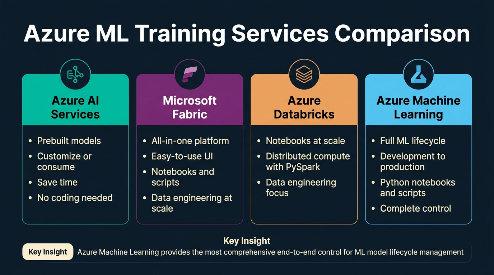
Figure 5. Side-by-side comparison of four Azure ML training services.
5. Azure ML Training Services Comparison](C:\Users\Utsav\.gemini\antigravity-ide\brain\73958bc8-3992-4b7d-9484-4cd83be14b1d\azure_services_comparison_1788889096122.jpg) Figure 5. Side-by-side comparison of four Azure ML training services.
1. Four primary services: Azure AI Services (prebuilt models), Microsoft Fabric (all-in-one platform), Azure Databricks (distributed Spark), Azure Machine Learning (end-to-end ML lifecycle).
2. Azure AI Services provides prebuilt models for vision, speech, language, and decision — customise or consume without training code.
3. Microsoft Fabric unifies data engineering, data science, warehousing, and real-time analytics in a single platform with UI and notebooks.
4. Azure Databricks offers distributed PySpark compute for data engineering and data science at scale on very large datasets.
5. Azure Machine Learning manages the full ML lifecycle — development, testing, deployment, and monitoring in a single governed workspace.
6. Choice depends on: team skills, preferred tooling, and compute needs.
7. Proseware: Python-proficient data scientists with no SQL/Spark experience → eliminates Databricks, favours Azure ML.
8. Proseware's audit compliance requirement strongly favours Azure ML — experiment tracking, model registry, versioned environments.
9. Proseware's notebooks and scripts preference favours Azure ML — SDK v2 provides deeper control than Fabric notebooks.
10. Proseware wants Jupyter notebooks — Azure ML provides compute instances preconfigured with JupyterLab and VS Code.
11. Azure AI Services is only appropriate when prebuilt models match the use case — Proseware needs custom classification, not prebuilt.
12. Microsoft Fabric is viable if integrated BI is also needed — but Azure ML is better fit for dedicated ML training.
13. Azure Databricks is right for extremely large datasets requiring Spark — Proseware's dataset is small and tabular.
14. The certification exam tests choosing between these four services based on specific scenario requirements.
15. Azure ML provides four authoring tools: Notebooks, Automated ML, Designer, and Prompt Flow.
16. Azure ML's model registry provides versioned, immutable records for full reproducibility and regulatory compliance.
17. Cost models differ: AI Services per-call, Fabric per-capacity, Databricks per-DBU, Azure ML per-compute resources.
18. Teams with SQL expertise could use Synapse for both prep and ML — but Proseware's Python-only team makes this suboptimal.
19. Enterprise architectures often use multiple services together: Synapse for prep, Azure ML for training, AI Services for augmentation.
20. Final recommendation for Proseware: Azure Machine Learning — Jupyter notebooks, audit trails, SDK v2 control, AutoML.
📌 TEACHER'S NOTE "When we get audited, we need to show exactly how a model is trained. That's why we want our data scientists to have full control — notebooks and scripts, not drag-and-drop." — Kiran Dambal |
KEY TERMS
Azure AI Services — Prebuilt API-accessible AI models. |
Microsoft Fabric — Unified analytics SaaS platform. |
Azure Databricks — Managed Apache Spark platform. |
Compute Instance — Managed VM preconfigured for ML development. |
TOPIC 5: Deciding Between Compute Options
Choosing the right compute is iterative — start with initial configuration, monitor utilisation, and adjust based on actual workload.
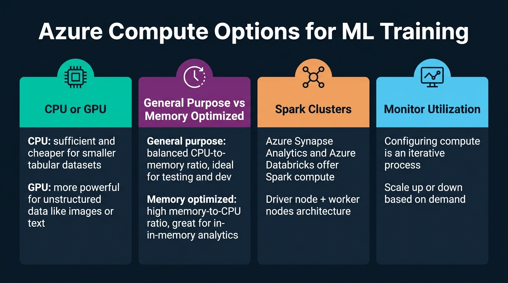
Figure 6. Four categories of compute decisions for ML training.
6. Azure Compute Options for ML Training](C:\Users\Utsav\.gemini\antigravity-ide\brain\73958bc8-3992-4b7d-9484-4cd83be14b1d\compute_options_infographic_1788889196858.jpg) Figure 6. Four categories of compute decisions for ML training.
1. CPU vs GPU: CPU is sufficient and cheaper for tabular datasets; GPU is essential for unstructured data (images, text) requiring deep learning.
2. General-purpose compute: balanced CPU-to-memory ratio, ideal for testing and development.
3. Memory-optimised compute: high memory-to-CPU ratio, suited for in-memory analytics and wide-feature datasets.
4. Spark clusters: driver + worker nodes for distributed processing of datasets too large for single machines.
5. Monitor utilisation: configuring compute is iterative — observe CPU, GPU, memory, and disk I/O to right-size.
6. For Proseware: CPU general-purpose is optimal — small tabular dataset, classical ML algorithms, minutes of training.
7. Azure ML offers compute instances (single VMs for development) and compute clusters (auto-scaling pools for training jobs).
8. Compute clusters support auto-scaling — minimum 0 nodes (pay nothing when idle), maximum N nodes.
9. Cloud advantage: shut down compute when not in use — unlike on-premises, cloud instances can be stopped on demand.
10. Deep learning (e.g., ResNet-50 for image classification) requires GPU — training on CPU would take days vs hours on GPU.
11. Azure ML compute instances include JupyterLab, VS Code, scikit-learn, PyTorch, TensorFlow, CUDA, cuDNN.
12. AutoML uses compute clusters (e.g., aml-cluster) to run multiple parallel trials concurrently.
13. Cost is proportional to VM size, node count, and duration — oversizing wastes money; undersizing causes failures.
14. VM families: D-series (general), E-series (memory), NC-series (GPU training), ND-series (large DL), NV-series (inference).
15. Compute selection should evolve: compute instance → small cluster → large/GPU cluster as the project matures.
16. Spark becomes relevant when data exceeds tens of gigabytes — PySpark or Dask for distributed processing.
17. Monitor to identify compute-bound (CPU/GPU at 100%) vs I/O-bound (CPU idle, waiting for data).
18. Azure Monitor provides dashboards for CPU, GPU, memory, network, and disk I/O metrics.
19. Low-priority (Spot) VMs offer up to 80% discount — suitable for fault-tolerant hyperparameter sweeps.
20. Optimal progression: compute instance (dev) → small cluster (AutoML) → large/GPU cluster (production training).
📌 TEACHER'S NOTE "Start small, monitor, and scale up only when you have evidence that you need more. That's how you avoid burning through your Azure credits on Day 1." — Kiran Dambal |
KEY TERMS
Compute Cluster — Auto-scaling VM pool for training jobs. |
GPU — Specialised processor for parallel operations in deep learning. |
Spot VM — Discounted preemptable VM for fault-tolerant workloads. |
Auto-Scaling — Automatic node provisioning based on demand. |
TOPIC 6: Training a Model — The 7-Step Pipeline
Model training is a structured pipeline of seven distinct steps, each capable of succeeding or failing independently.
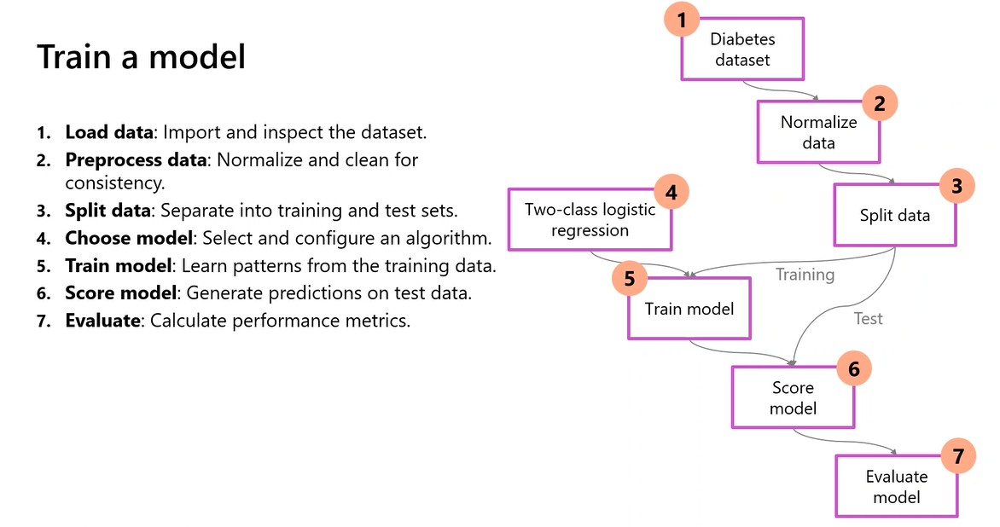
Figure 7. Complete training workflow from loading data through evaluation.
7. Train a Model — The 7-Step Pipeline](C:\Users\Utsav\.gemini\antigravity-ide\brain\73958bc8-3992-4b7d-9484-4cd83be14b1d\screenshot_train_model.png) Figure 7. Complete training workflow from loading data through evaluation.
1. Step 1 — Load Data: Import and inspect the dataset — diabetes dataset with features and target column Diabetic.
2. Step 2 — Preprocess Data: Normalise numerical features, clean inconsistencies, handle missing values through imputation.
3. Step 3 — Split Data: Divide into training set (70-80%) and test set (20-30%) for generalisation evaluation.
4. Step 4 — Choose Algorithm: Select the ML algorithm — e.g., Two-Class Logistic Regression for binary classification.
5. Step 5 — Train Model: Algorithm learns patterns by adjusting parameters to minimise a loss function (e.g., cross-entropy).
6. Step 6 — Score Model: Generate predictions on test data — predicted labels and probability scores.
7. Step 7 — Evaluate Model: Compare predictions vs actual labels — calculate accuracy, precision, recall, F1, AUC-ROC.
8. Normalisation is critical — features with different scales (Age: 20-80 vs DiabetesPedigree: 0-2.5) bias training without it.
9. Train-test split must be random and stratified — maintaining class proportions in both sets.
10. Cross-validation (k-fold) is more robust — 5-fold CV divides data into 5 parts, trains on 4, evaluates on 1, rotates.
11. The AutoML lab uses 5-fold CV (n_cross_validations=5) for robust performance estimation on smaller datasets.
12. Algorithm selection is impactful — different algorithms assume different data properties (linearity, feature interactions, noise tolerance).
13. Logistic Regression is a good starting point: fast, interpretable, calibrated probabilities — but assumes linear decision boundaries.
14. Decision Trees and ensembles (Random Forest, Gradient Boosting) capture non-linear relationships — often best on tabular data.
15. Training involves iterative optimisation — adjusting parameters over multiple epochs until error converges.
16. Scoring reveals prediction confidence — "diabetic with 51% probability" is far less reliable than "diabetic with 95% probability."
17. Evaluation should use multiple metrics — accuracy alone is misleading when classes are imbalanced.
18. The pipeline can be executed manually (notebook), visually (Designer), or automatically (AutoML runs Steps 4-7 hundreds of times).
19. The Designer view shows the pipeline as a DAG — visual, auditable, and reproducible.
20. This 7-step pipeline is universal — every ML project follows these steps regardless of platform.
📌 TEACHER'S NOTE "Every ML project, no matter how complex, boils down to these seven steps. If your model isn't performing well, go back and check each step — the problem is always in one of them." — Kiran Dambal |
KEY TERMS
Cross-Validation — Evaluation technique dividing data into k subsets for robust performance estimation. |
Normalisation — Rescaling features to a common range. |
AUC-ROC — Metric measuring classifier's ability to distinguish classes across thresholds. |
Scoring — Feeding data through a trained model to generate predictions. |
TOPIC 7: Model Integration & Deployment
Training is only valuable if the model can be integrated into an application. This topic covers deployment design decisions.
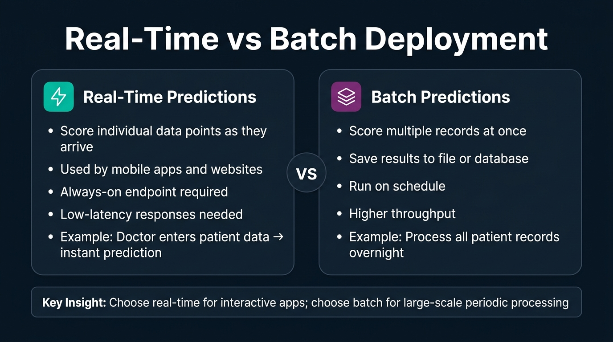
Figure 8. Comparison of real-time and batch deployment strategies.
8. Real-Time vs Batch Deployment](C:\Users\Utsav\.gemini\antigravity-ide\brain\73958bc8-3992-4b7d-9484-4cd83be14b1d\deployment_comparison_1788889122356.jpg) Figure 8. Comparison of real-time and batch deployment strategies.
1. The goal is to integrate the model into an application — mobile app, web dashboard, API, or automated pipeline.
2. Azure ML endpoints are URLs that applications send HTTP requests to for predictions.
3. Two deployment patterns: real-time (individual scoring with immediate response) and batch (bulk scoring with stored results).
4. Real-time: needed for interactive apps — Proseware's doctor enters patient data and expects immediate screening recommendation.
5. Batch: appropriate for bulk scoring — processing all patient records overnight for population health reports.
6. For Proseware: real-time is correct — individual consultations, needs seconds response, always available, one patient at a time.
7. Azure ML supports managed online endpoints (real-time, auto-managed) and batch endpoints (async pipeline-triggered).
8. Real-time endpoint: deployed model + scoring script + Docker environment — Azure manages container orchestration.
9. Request-response: client sends JSON payload with patient features → endpoint returns JSON with prediction and confidence.
10. Managed online endpoints auto-scale horizontally — load-balancing across instances as demand grows.
11. Proseware deployment: real-time endpoint, managed (not Kubernetes), CPU compute (lightweight tabular classification).
12. Batch endpoints process input files, run model on each record, write results to blob storage.
13. Cost: real-time = always-on compute (24/7); batch = cost only during processing window.
14. AKS deployment available for advanced networking or existing Kubernetes clusters — but managed endpoints are simpler.
15. Blue/green deployment: deploy new model version alongside old, gradually shift traffic, rollback if needed.
16. Scoring script: init() loads model at startup, run() processes each request — preprocess, infer, return prediction.
17. Authentication: key-based (simple, for dev) or token-based (Azure AD, for production).
18. Deployment is not the end of the ML lifecycle — it's the beginning of the operational phase.
19. ONNX format enables cross-platform model deployment — Python model runs in C#, JavaScript, or edge devices.
20. Proseware architecture: Doctor's app → HTTPS request → Azure ML managed endpoint → classification model → prediction response.
📌 TEACHER'S NOTE "A model sitting in a notebook is just an experiment. A model behind an endpoint is a product. Your job is to turn experiments into products." — Kiran Dambal |
KEY TERMS
Managed Online Endpoint — Fully managed deployment for real-time predictions. |
Batch Endpoint — Deployment for async bulk scoring. |
Scoring Script — Python script with `init()` and `run()` for deployed inference. |
ONNX — Open format for cross-platform model deployment. |
TOPIC 8: Model Monitoring & MLOps Readiness
Deploying a model is the beginning of continuous monitoring and maintenance. Models degrade as real-world data drifts from training data.
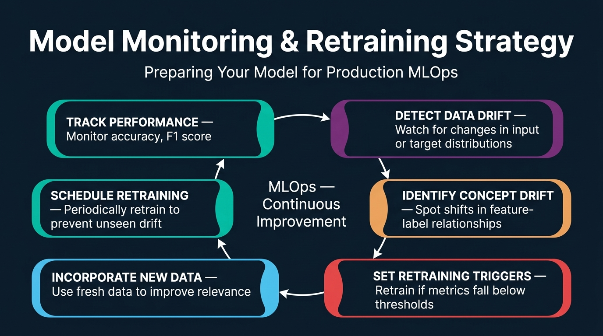
Figure 9. The continuous MLOps improvement cycle with six monitoring stages.
9. Model Monitoring & Retraining Strategy](C:\Users\Utsav\.gemini\antigravity-ide\brain\73958bc8-3992-4b7d-9484-4cd83be14b1d\model_monitoring_infographic_1788889208395.jpg) Figure 9. The continuous MLOps improvement cycle with six monitoring stages.
1. Design for monitoring and retraining from the beginning — not as an afterthought.
2. Track performance: continuously monitor accuracy, F1, precision, recall, AUC on production data.
3. Detect data drift: monitor for changes in input feature distributions — e.g., average patient age shifting.
4. Identify concept drift: the relationship between features and target changes — e.g., new medications alter BMI-diabetes correlation.
5. Set retraining triggers: automated rules to retrain when metrics drop below thresholds or drift exceeds significance levels.
6. Incorporate new data: add new patient data to training corpus — validate quality and labels before inclusion.
7. Schedule retraining: periodic retraining (monthly/quarterly) prevents unseen gradual drift accumulation.
8. Data drift detection uses statistical tests: Kolmogorov-Smirnov, Population Stability Index, Jensen-Shannon divergence.
9. Healthcare regulatory requirements mandate continuous validation of deployed diagnostic models for patient safety.
10. Azure ML Monitoring section provides data drift monitors, Azure Monitor alerting, and feature-level drift reports.
11. Concept drift requires labelled ground truth from production — comparing actual outcomes against predictions.
12. Anti-pattern: monitoring only aggregate metrics without tracking per-class or per-subgroup performance.
13. Automated retraining pipeline: check drift daily → trigger retrain if threshold exceeded → evaluate new model → promote if better.
14. The monitoring feedback loop: Deploy → Monitor → Detect → Retrain → Validate → Promote → Deploy → Monitor.
15. Feature attribution monitoring: track if feature importance distribution shifts from training — may indicate spurious correlations.
16. Model registry versioning: retrained model = version N+1, previous version N available for rollback.
17. Alerting via Azure Monitor: email, SMS, or webhook notifications for drift, metric drops, or latency issues.
18. Monitoring costs must be factored into total cost of ownership — compute, storage, and engineering time.
19. Healthcare regulations (HIPAA, FDA) require formal validation reports — Azure ML's tracking provides the audit trail.
20. Goal: production performance remains as close as possible to validated training performance.
📌 TEACHER'S NOTE "Your model is only as good as yesterday's data. If you're not monitoring for drift, you're flying blind. And in healthcare, flying blind is not an option." — Kiran Dambal |
KEY TERMS
Data Drift — Change in input feature distributions over time. |
Concept Drift — Change in feature-target relationships. |
Retraining Trigger — Automated rule initiating retraining when metrics drop. |
Model Registry — Versioned repository of trained models with metadata. |
TOPIC 9: Automated Machine Learning (AutoML)
AutoML is Azure's solution for algorithm selection and hyperparameter tuning — systematically exploring the search space to find the best model.
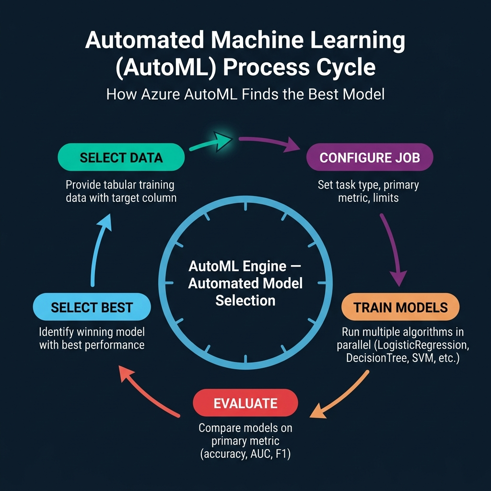
Figure 10. The five-stage AutoML cycle: Select Data → Configure Job → Train Models → Evaluate → Select Best.
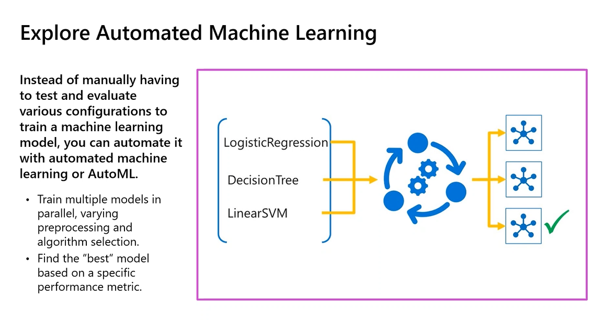
Figure 10b. AutoML trains multiple models in parallel, varying preprocessing and algorithm selection.
10. AutoML Process Cycle](C:\Users\Utsav\.gemini\antigravity-ide\brain\73958bc8-3992-4b7d-9484-4cd83be14b1d\automl_cycle_diagram_1788889110814.jpg) Figure 10. The five-stage AutoML cycle: Select Data → Configure Job → Train Models → Evaluate → Select Best.  Figure 10b. AutoML trains multiple models in parallel, varying preprocessing and algorithm selection.
1. AutoML automates algorithm search and hyperparameter tuning — training multiple models in parallel to find the best one.
2. AutoML supports five task types: Classification, Regression, Time-series forecasting, Computer vision, and NLP.
3. For Classification, AutoML explores: LogisticRegression, SGD, DecisionTree, RandomForest, LightGBM, GradientBoosting, XGBoost, LinearSVM.
4. Primary metric ranks and selects the best model — common choices: accuracy, AUC_weighted, precision_score_weighted, f1_score_weighted.
5. AutoML applies automatic featurisation: scaling, normalisation, imputation, one-hot encoding, feature engineering, feature selection.
6. Can be configured via Azure ML Studio (visual) or Python SDK v2 (more control, reproducible via code).
7. Key parameters: compute, experiment_name, training_data, target_column_name, primary_metric, n_cross_validations, enable_model_explainability.
8. Limits control resources: timeout_minutes, trial_timeout_minutes, max_trials, enable_early_termination.
9. Block algorithms: blocked_training_algorithms=["LogisticRegression"] forces exploration of other algorithms.
10. ONNX export: enable_onnx_compatible_models=True for cross-platform deployment in non-Python environments.
11. Featurisation is intelligent — inspects column types and applies appropriate transformations automatically.
12. Cross-validation (n_cross_validations=5) provides robust evaluation, especially on smaller datasets.
13. AutoML includes ensemble methods — voting and stacking ensembles combining base models for better accuracy.
14. AutoML runs on compute clusters for parallel trial execution — each trial on a separate node.
15. Results viewable in Azure ML Studio — Jobs page shows trials ranked by primary metric with full details.
16. Model explanations (SHAP values) show feature importance when enable_model_explainability=True.
17. AutoML is fully auditable — every trial logged with algorithm, hyperparameters, preprocessing, data, and metrics.
18. AutoML handles class imbalance automatically — SMOTE, class weighting, stratified sampling.
19. SDK v2 configuration is concise: automl.classification(compute="aml-cluster", target_column_name="Diabetic", primary_metric="accuracy").
20. AutoML is a tool that accelerates search — the data scientist must still define the problem, prepare data, interpret results, and design deployment.
📌 TEACHER'S NOTE "AutoML is your assistant, not your replacement. It finds the best algorithm — but you still need to ask the right question and prepare the right data." — Kiran Dambal |
KEY TERMS
AutoML — Automated algorithm search and model selection. |
Primary Metric — Performance metric for ranking models. |
Early Termination — Policy stopping exploration when improvement unlikely. |
Model Explainability — Feature importance interpretation via SHAP. |
Ensemble — Model combining multiple base models. |
TOPIC 10: Lab — Classification with AutoML (Python SDK v2)
This topic walks through the hands-on lab notebook demonstrating the complete AutoML classification workflow using the Azure ML Python SDK v2.
2. 1. Verify azure-ai-ml package: pip show azure-ai-ml — install if missing with pip install azure-ai-ml.
2. Authenticate with DefaultAzureCredential — chains managed identity, environment variables, and browser login.
3. Connect via MLClient.from_config(credential=credential) — reads workspace config auto-present on compute instances.
4. Load data: Input(type=AssetTypes.MLTABLE, path="azureml:diabetes-training:1") — pre-registered MLTable asset.
5. Data contains: Pregnancies, PlasmaGlucose, DiastolicBloodPressure, TricepsThickness, SerumInsulin, BMI, DiabetesPedigree, Age, Diabetic (target).
6. Configure: automl.classification(compute="aml-cluster", experiment_name="auto-ml-class-dev", target_column_name="Diabetic", primary_metric="accuracy", n_cross_validations=5, enable_model_explainability=True).
7. Set limits: timeout_minutes=60, trial_timeout_minutes=20, max_trials=5, enable_early_termination=True.
8. Set training: blocked_training_algorithms=["LogisticRegression"], enable_onnx_compatible_models=True.
9. Submit: returned_job = ml_client.jobs.create_or_update(classification_job) — prints Studio URL for monitoring.
10. Monitor in Studio: Jobs page shows trials ranked by accuracy with training duration and preprocessing details.
11. 5-fold CV produces 25 total training runs (5 algorithms x 5 folds), reporting average metric per algorithm.
12. With LogisticRegression blocked, AutoML explores tree-based methods: DecisionTree, RandomForest, GradientBoosting, LightGBM, XGBoost.
13. enable_model_explainability=True generates SHAP-based feature importance for the best model.
14. enable_onnx_compatible_models=True enables ONNX export for mobile/edge deployment.
15. Best model can be registered in model registry — versioned, production-ready artifact with full metadata.
16. Standard SDK v2 pattern: authenticate → connect → load data → configure AutoML → set limits → submit → monitor.
17. experiment_name="auto-ml-class-dev" groups all runs under a single experiment for comparison.
18. max_trials=5 is intentionally low for the lab — production would use 20-100+ trials.
19. No preprocessing code needed — AutoML handles featurisation automatically from MLTable metadata.
20. The lab reinforces Day 1's central theme: design decisions at every step affect the final model.
📌 TEACHER'S NOTE "Look at your code — it's barely 20 lines. But behind those 20 lines, Azure is training 5 different models with 5-fold cross-validation, automatic featurisation, and SHAP explanations. That's the power of the SDK." — Kiran Dambal |
KEY TERMS
MLClient — Main SDK v2 entry point for Azure ML. |
DefaultAzureCredential — Auto-chaining authentication class. |
Experiment — Named grouping of related runs. |
Trial — Single AutoML training run with one algorithm-hyperparameter combination. |
AutoML Lab — Python Code Reference
The following script demonstrates the end-to-end configuration and submission of an Automated ML classification job using the Azure Machine Learning Python SDK v2 (`azure-ai-ml`).
# Step 1: Verify SDK installation |
Azure ML — Typical Usage Sequence
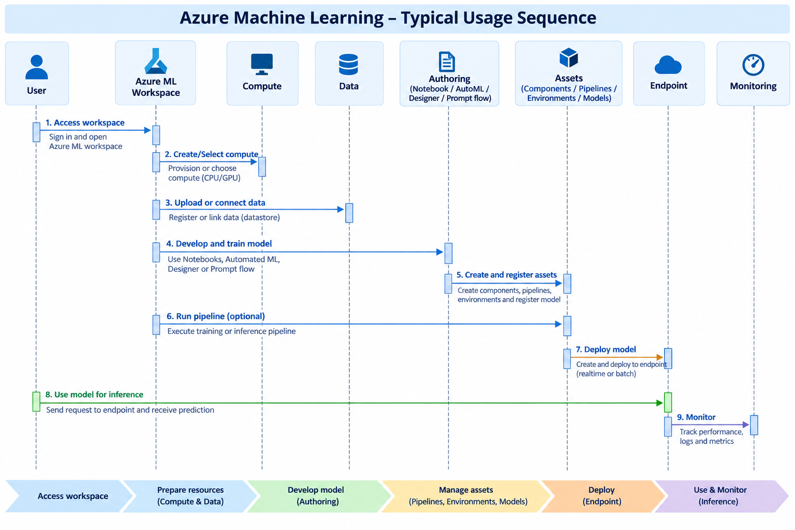
Figure 12. The complete 9-step Azure ML workflow from workspace access, compute setup, data preparation, AutoML job configuration, model evaluation, registration, to deployment and monitoring.
Case Study: Proseware Diabetes Detection
Scenario Overview
Welcome to Proseware! You've been hired as the lead data scientist to design a machine learning training solution. Proseware is developing a mobile application to help healthcare practitioners diagnose diseases faster. The flagship feature predicts whether a patient should be screened for diabetes based on standard clinical indicators.
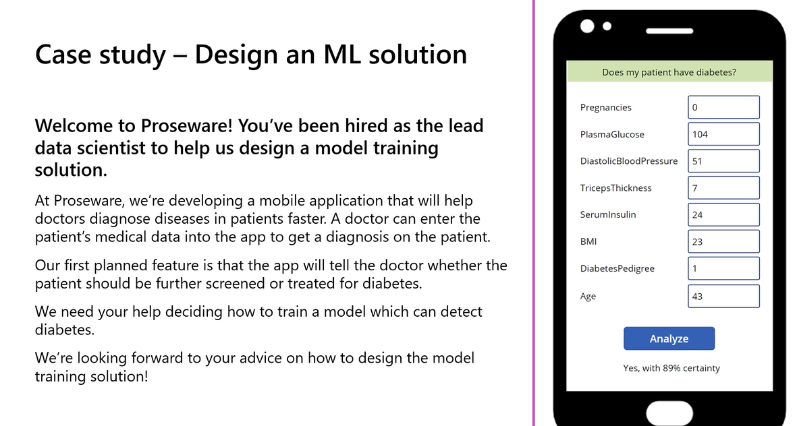
Figure 13. Mobile app interface mockup showing patient clinical feature inputs and real-time 'Yes, with 89% certainty' prediction response.
Architectural Design Decision Summary
Design Decision | Recommendation | Architectural Justification |
Problem Type | Binary Classification | Predict diabetic indicator (Yes/No) from 8 clinical features. |
Data Storage | Azure Data Lake Gen 2 | Scalable, hierarchical namespace, native CSV/Parquet support, privacy-compliant. |
Data Movement | Azure Synapse Analytics | Automated ETL from patient database, data anonymisation, and CSV staging. |
Training Service | Azure Machine Learning | Python Jupyter notebooks, full audit trail, SDK v2 control, AutoML support. |
Compute (Training) | CPU General-Purpose Cluster | Small tabular dataset, classical ML algorithms, cost-efficient auto-scaling. |
Training Approach | AutoML with Python SDK v2 | Automated algorithm exploration, 5-fold cross-validation, SHAP explainability. |
Primary Metric | Accuracy (+ AUC-ROC) | Binary classification benchmark; precision and recall monitored for patient safety. |
Deployment Type | Real-Time Managed Endpoint | Doctors require instantaneous predictions during interactive clinical consultations. |
Endpoint Compute | CPU (Standard VM) | Lightweight tabular inference requires minimal compute; avoids high GPU cost. |
Monitoring Strategy | Data Drift + Retraining Trigger | Continuous statistical validation ensures safety and regulatory compliance. |
Knowledge Check
Question 1: Every minute, a JSON object is extracted from an IoT sensor device. What type of data is extracted?
• Answer: Semi-structured. JSON data has a consistent structural schema with key-value pairs, but utilizes a self-describing, flexible format rather than fixed relational database rows.
Question 2: Which tool in Azure allows quick iteration over featurisation, algorithms, and hyperparameters?
• Answer: Automated Machine Learning (AutoML). AutoML iterates automatically across data transformations, algorithm selections, and hyperparameter spaces to discover the best model without manual trial and error.
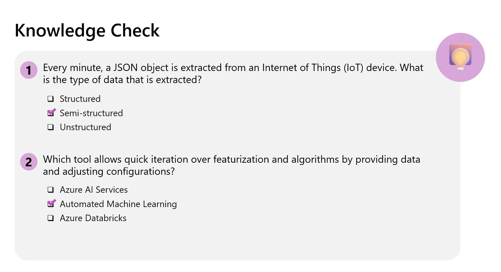
Figure 14. Lecture session knowledge check quiz showing core assessment items.
Glossary of Key Terms
Alphabetical reference of foundational machine learning operations, cloud data, and Azure Machine Learning terms covered across Day 1.
Term | Definition & Operational Context |
AI-300 | Microsoft certification for ML Operations Engineer Associate |
AUC-ROC | Metric measuring classifier's ability to distinguish classes (1.0=perfect, 0.5=random) |
AutoML | Azure ML capability for automated model training and selection |
Azure Data Lake Gen 2 | Hierarchical cloud storage optimised for big data and ML |
Azure Databricks | Managed Apache Spark platform for distributed data science |
Azure Machine Learning | End-to-end cloud platform for ML model lifecycle management |
Batch Endpoint | Deployment target for async bulk scoring via pipeline runs |
Classification | ML task predicting a categorical label from discrete classes |
Compute Cluster | Auto-scaling VM pool for training jobs in Azure ML |
Compute Instance | Managed VM preconfigured for ML development |
Concept Drift | Change in feature-target relationships over time |
Cross-Validation | k-fold evaluation technique for robust performance estimation |
Data Asset | Versioned data reference in Azure ML for reproducibility |
Data Drift | Change in input feature distributions over time |
Datastore | Azure ML abstraction for secure external storage access |
DefaultAzureCredential | Azure SDK class chaining multiple authentication methods |
Early Termination | AutoML policy stopping exploration when improvement unlikely |
Ensemble Model | Model combining multiple base models for improved accuracy |
Experiment | Named grouping of related runs in Azure ML |
Featurisation | Automatic feature preprocessing by AutoML |
GPU | Specialised processor for parallel operations in deep learning |
Managed Online Endpoint | Fully managed real-time prediction deployment target |
MLClient | Main SDK v2 entry point for Azure ML workspace interaction |
MLOps | Practices combining ML, DevOps, and Data Engineering |
MLTable | Tabular data format with schema metadata for AutoML |
Model Explainability | Feature importance interpretation via SHAP values |
Model Registry | Versioned repository of trained models with metadata |
Normalisation | Rescaling features to prevent magnitude bias |
ONNX | Open format for cross-platform model deployment |
Primary Metric | Performance metric for AutoML model ranking |
Regression | ML task predicting continuous numerical values |
Retraining Trigger | Automated rule initiating retraining on metric drops |
Scoring | Generating predictions from a trained model |
Scoring Script | Python script with init()/run() for deployed inference |
Spot VM | Discounted preemptable VM for fault-tolerant workloads |
Time-Series Forecasting | ML task predicting future values from temporal data |
Trial | Single AutoML run with one algorithm-hyperparameter combo |
Key Takeaways from This Session
If you remember nothing else from this session, remember these 14 principles:
1. Every ML project starts with a design decision, not code — defining the problem type determines every subsequent choice.
2. Separate compute from storage — data persists cheaply while compute scales on demand and to zero when idle.
3. The right service depends on the team, not the technology — choice is driven by skills, tooling preferences, and compliance.
4. AutoML is an assistant, not a replacement — it automates search but you must define the problem and interpret results.
5. Start with CPU and scale to GPU only when justified — for tabular classification, CPU is sufficient and dramatically cheaper.
6. Cross-validation provides more robust evaluation — especially on smaller datasets, 5-fold CV prevents lucky splits.
7. Model deployment is the beginning, not the end — monitoring for drift is what keeps deployed models reliable.
8. Healthcare ML requires continuous validation — regulatory compliance mandates ongoing monitoring for patient safety.
9. Azure ML's model registry provides the audit trail — every version tracked with data, code, environment, and metrics.
10. The 7-step pipeline is universal — Load, Preprocess, Split, Choose, Train, Score, Evaluate applies to every ML project.
11. Real-time for interactive apps; batch for periodic processing — Proseware needs instant predictions (real-time).
12. Data preparation consumes 60-80% of effort — invest in robust, automated ingestion pipelines upfront.
13. The Python SDK v2 gives full programmatic control — production MLOps should be code-defined for reproducibility.
14. MLOps turns experiments into products — bridging ad-hoc notebooks and production ML systems is the MLOps engineer's core job.
Suggested References
The following materials were referenced or recommended during the session for deeper study:
• Microsoft Learn — Design a machine learning training solution. Official AI-300 learning path. Primary reference covering problem framing, service selection, compute sizing, and pipeline architecture.
• Microsoft Learn — Azure Machine Learning documentation. (docs.microsoft.com/azure/machine-learning). Comprehensive documentation on Azure ML Studio, Python SDK v2, AutoML jobs, compute targets, and managed endpoints.
• Microsoft Learn — Automated Machine Learning in Azure ML. Official tutorial. Step-by-step hands-on guide for configuring classification and regression AutoML jobs using the Python SDK v2.
• Microsoft Azure AI-300 Certification Exam Guide. Official exam preparation guide. Outlines all knowledge domains, skill measurements, and exam objectives for the MLOps Engineer Associate credential.
Closing Summary
This session laid the architectural foundation for designing machine learning training solutions on Azure. Rather than diving directly into code, the curriculum systematically walked through every design decision an ML Operations Engineer must make — from identifying the correct problem type to selecting the right storage, service, compute, and deployment pattern. Each decision was grounded in the Proseware diabetes detection case study, transforming abstract principles into concrete, defensible choices.
The central framework introduced was the end-to-end ML pipeline — a 7-step process (Define → Ingest → Choose Service → Choose Compute → Train → Deploy → Monitor) that applies to any ML project on any platform. Within this framework, Azure Machine Learning emerged as the recommended platform for teams needing full programmatic control, audit compliance, and the flexibility to use notebooks, AutoML, and pipelines within a single governed workspace.
The hands-on lab reinforced these principles by demonstrating how 20 lines of Python SDK v2 code can configure and launch an AutoML classification job — automatically exploring algorithms, applying cross-validation, generating explanations, and identifying the best model. This power comes not from writing more code, but from making the right design decisions upfront.
Looking ahead, remaining sessions will cover hyperparameter tuning (sweep jobs), reproducible ML pipelines, CI/CD for model deployment, and operationalising monitoring at scale. The message is clear: machine learning is not a technology problem — it is a design problem. The engineer who understands the system they are building will always produce better solutions than one who only knows the tools.
HANDOUT ASSEMBLY COMPLETE
AI10 — Module 16 — AI-300 MLOps Engineer Associate — Day 1 Student Handout
Instructor: Kiran Dambal | Academic Session Handout